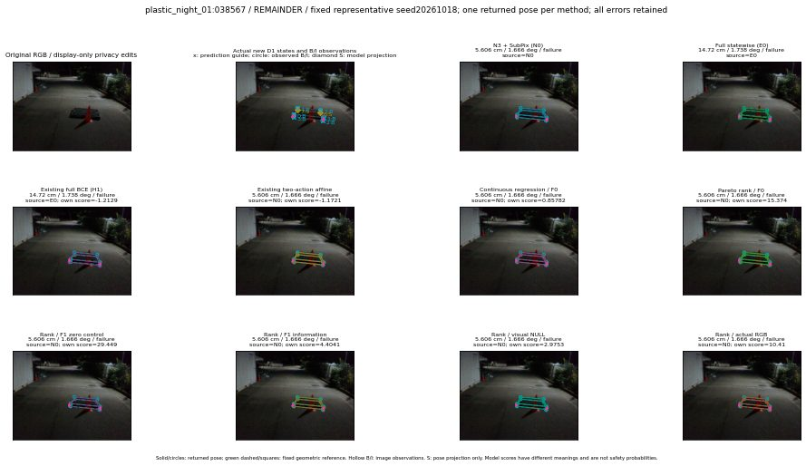

실선은 반환 자세, 초록 점선은 고정 기하 참조입니다. S는 영상 관측이 아닙니다. 점수는 모델별 의미가 다르며 보정된 안전 확률이 아닙니다. 개인정보 처리는 표시 사본에만 적용했습니다.
| 방법·seed | 위치 / 회전 / 공동성공 | 실제 출처 | 선택 후보 | 각 모델 자체 점수 |
|---|---|---|---|---|
| N0 | 5.606 cm / 1.666 deg / failure | N0 | N/A | N/A |
| E0 | 14.72 cm / 1.738 deg / failure | E0 | N/A | N/A |
| E0_REGENERATED | 14.72 cm / 1.738 deg / failure | E0 | E0_REGENERATED | N/A |
| POSEFIX_SUBPIX_PF_ANCHOR | 68.29 cm / 89.65 deg / failure | OTHER | N/A | N/A |
| POSEFIX_SUBPIX_YOLO_ANCHOR | 68.29 cm / 89.65 deg / failure | OTHER | N/A | N/A |
| D1_H1_MLP_s20261018 | 14.72 cm / 1.738 deg / failure | E0 | E0_REGENERATED | -1.21292245388031 |
| D1_H1_MLP_s20261019 | 14.72 cm / 1.738 deg / failure | E0 | E0_REGENERATED | -1.3716868162155151 |
| D1_H1_MLP_s20261020 | 14.72 cm / 1.738 deg / failure | E0 | E0_REGENERATED | -2.073329448699951 |
| D1_H1_PAIR_MLP_s20261018 | 5.606 cm / 1.666 deg / failure | N0 | N0 | -1.8494547605514526 |
| D1_H1_PAIR_MLP_s20261019 | 5.606 cm / 1.666 deg / failure | N0 | N0 | -1.8460168838500977 |
| D1_H1_PAIR_MLP_s20261020 | 5.606 cm / 1.666 deg / failure | N0 | N0 | -2.233375072479248 |
| D1_H1_PAIR_ROLE_AFFINE_s20261018 | 5.606 cm / 1.666 deg / failure | N0 | N0 | -1.172127366065979 |
| D1_H1_PAIR_ROLE_AFFINE_s20261019 | 5.606 cm / 1.666 deg / failure | N0 | N0 | -1.0333523750305176 |
| D1_H1_PAIR_ROLE_AFFINE_s20261020 | 5.606 cm / 1.666 deg / failure | N0 | N0 | -0.871727466583252 |
| R_CONT_F0_s20261018 | 5.606 cm / 1.666 deg / failure | N0 | N0 | 0.8578182458877563 |
| R_CONT_F0_s20261019 | 14.72 cm / 1.738 deg / failure | E0 | E0_REGENERATED | 1.0344268083572388 |
| R_CONT_F0_s20261020 | 14.72 cm / 1.738 deg / failure | E0 | E0_REGENERATED | 0.9046158790588379 |
| R_ORDER_F0_s20261018 | 5.606 cm / 1.666 deg / failure | N0 | N0 | 15.373763084411621 |
| R_ORDER_F0_s20261019 | 5.606 cm / 1.666 deg / failure | N0 | N0 | 11.834075927734375 |
| R_ORDER_F0_s20261020 | 5.606 cm / 1.666 deg / failure | N0 | N0 | -9.246577262878418 |
| R_ORDER_F1_ZERO_s20261018 | 5.606 cm / 1.666 deg / failure | N0 | N0 | 29.448909759521484 |
| R_ORDER_F1_ZERO_s20261019 | 5.606 cm / 1.666 deg / failure | N0 | N0 | 34.2761344909668 |
| R_ORDER_F1_ZERO_s20261020 | 5.606 cm / 1.666 deg / failure | N0 | N0 | 12.79426097869873 |
| R_ORDER_F1_s20261018 | 5.606 cm / 1.666 deg / failure | N0 | N0 | 4.404112815856934 |
| R_ORDER_F1_s20261019 | 5.606 cm / 1.666 deg / failure | N0 | N0 | 7.388523578643799 |
| R_ORDER_F1_s20261020 | 5.606 cm / 1.666 deg / failure | N0 | N0 | 1.3771611452102661 |
| V_ORDER_NULL_s20261018 | 5.606 cm / 1.666 deg / failure | N0 | N0 | 2.9753031730651855 |
| V_ORDER_NULL_s20261019 | 5.606 cm / 1.666 deg / failure | N0 | N0 | 2.275320529937744 |
| V_ORDER_NULL_s20261020 | 5.606 cm / 1.666 deg / failure | N0 | N0 | 3.0033507347106934 |
| V_ORDER_RGB_s20261018 | 5.606 cm / 1.666 deg / failure | N0 | N0 | 10.4098482131958 |
| V_ORDER_RGB_s20261019 | 5.606 cm / 1.666 deg / failure | N0 | N0 | 1.497263789176941 |
| V_ORDER_RGB_s20261020 | 5.606 cm / 1.666 deg / failure | N0 | N0 | -7.83149528503418 |